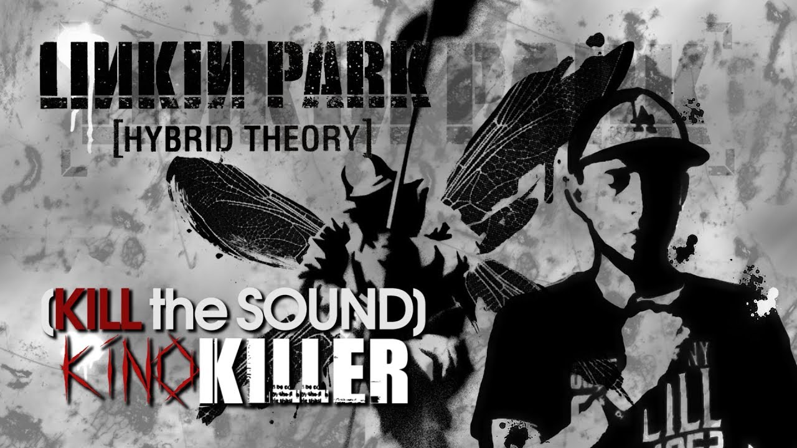
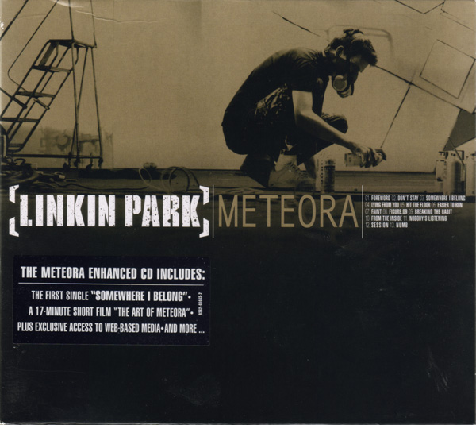
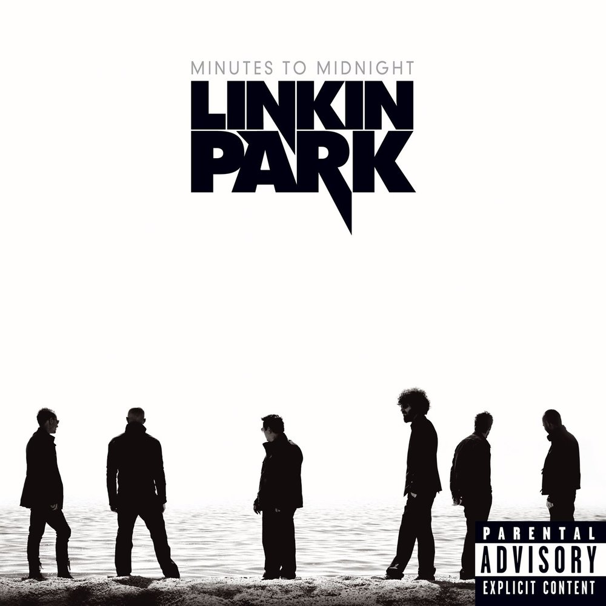
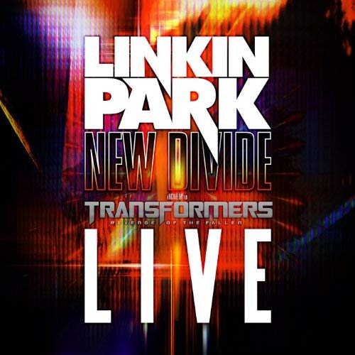

Hybrid Theory
В 1999 году группе удалось заключить контракт с Warner Bros. Records. На следующий год группа выпустила дебютный альбом Hybrid Theory, содержавший материал, копившийся много лет. Продюсером альбома стал Дон Гилмор. Альбом стал триумфом группы и разошёлся тиражом более 30 млн экземпляров, а за песню «Crawling» группа получила «Грэмми» в номинации «Лучшее исполнение в стиле хард-рок». Песни из альбома — «Crawling», «One Step Closer» и «In the End» — имели успех в хит-парадах, а клип «In the End», транслировавшийся по MTV, получил награду как лучший видеоклип года. В 2000 году группа провела тур по США, неоднократно выступая с известными музыкантами, как Deftones, а также приняла участие в таких фестивалях, как Ozzfest и Rock am Ring. В общей сложности за тот год группа отыграла 320 концертов и выпустила DVD Frat Party at the Pankake Festival. В 2002-м году Linkin Park записали альбом ремиксов Reanimation.

Meteora
В 2003 году вышел второй альбом группы под названием Meteora, возглавивший чарт Billboard 200. Видеоклипы на песни «Somewhere I Belong», «Breaking the Habit» и «Numb» транслировались по MTV и занимали первые места в хит-парадах. Альбом получил ряд наград: премию MTV за лучшее видео («Somewhere I Belong») и Radio Music Awards за лучшую песню («Numb»). На песни «Numb», «Faint», «Papercut», «Points of Authority», «In the End», «One Step Closer» (из альбома Hybrid Theory) и «Lying from You» были записаны ремиксы с участием рэпера Jay-Z. После выпуска этого альбома группа повысила свою популярность в мире до топов мировых хит-парадов. Сингл «Numb» стал самой узнаваемой песней Linkin Park. А в конце 2003 года вышел концертный альбом Live In Texas и видео The Making Of Meteora.

Minutes to Midnight
15 мая 2007 года вышел альбом Minutes to Midnight, с которым группа отошла от прежнего стиля гибрид и приблизилась по звучанию к классическому року. Значительно уменьшилось число речитативных вставок, музыка стала мелодичнее. Поклонники группы восприняли альбом неоднозначно, оценки разнились от восторженных до крайне негативных. Сам Честер Беннингтон в интервью сказал, что на альбоме Meteora группа была вынуждена следовать давлению фанатов, копируя стиль дебютного Hybrid Theory, но сейчас, с новым звучанием, Linkin Park «чувствует себя комфортно». 7 сентября 2008 года группа стала лауреатом премии MTV Video Music Awards в номинации «Лучший клип в стиле рок». 25 ноября 2008 года вышел DVD Road to Revolution: Live at Milton Keynes, на котором записан один из концертов в рамках европейского тура. Песня «What I’ve Done» стала заглавным треком фильма «Трансформеры», а песня «Leave Out All The Rest» прозвучала в титрах фильма «Сумерки»

New Divide
18 мая 2009 года вышел новый сингл Linkin Park под названием «New Divide». Трек был специально записан для фильма «Трансформеры: Месть падших», который вышел 24 июня. Клип на «New Divide» Linkin Park выпустили 13 июня. На YouTube этот клип набрал более 340 миллионов просмотров.
«New Divide» быстро сделала карьеру на радио, став третьим синглом, одновременно попавшим в первую десятку Billboard Hot 100 и Alternative Songs (до этого момента такое удалось сделать только двум песням — Coldplay «Speed of Sound» и ещё одному треку Linkin Park «What I’ve Done»). Кроме того, «New Divide» стала лучшей в карьере коллектива песней, дебютировавшей в Billboard Hot 100, а также лучшим дебютным синглом в альтернативных чартах более чем за год. Linkin Park является одной из пяти групп, чьи три сингла дебютировали в Top 10 альтернативных чартов за всю их 20-летнюю историю. Кроме Linkin Park, это удалось сделать U2, R.E.M., Pearl Jam, Red Hot Chili Peppers.
Назад